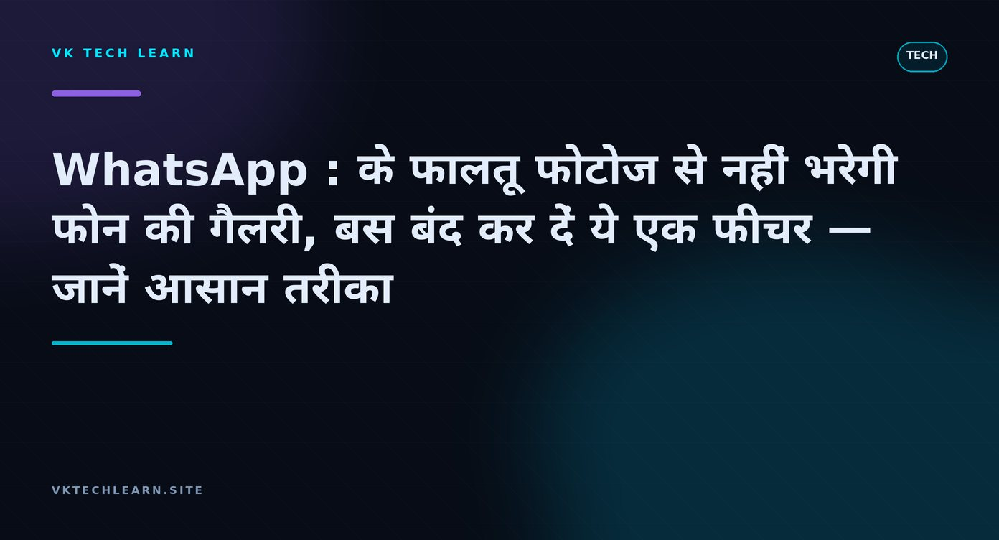

WhatsApp : के फालतू फोटोज से नहीं भरेगी फोन की गैलरी, बस बंद कर दें ये एक फीचर — जानें आसान तरीका
WhatsApp में फालतू फोटो और वीडियो गैलरी में सेव होने से कैसे रोकें?
अगर आप WhatsApp इस्तेमाल करते हैं, तो आपने जरूर देखा होगा कि जैसे ही कोई फोटो, वीडियो, स्टिकर या GIF डाउनलोड होता है, वह अपने-आप फोन की गैलरी में दिखाई देने लगता है। इससे गैलरी बार-बार भर जाती है और फोन की स्टोरेज भी बेवजह कम होने लगती है। खासकर फैमिली और ग्रुप चैट से आने वाले फॉरवर्डेड फोटो-वीडियो सबसे ज्यादा जगह घेरते हैं।

अगर आप चाहते हैं कि WhatsApp की मीडिया फाइल्स सिर्फ चैट में रहें और गैलरी में सेव न हों, तो इसके लिए WhatsApp में एक खास सेटिंग दी गई है — Media Visibility। इस फीचर को Off करते ही गैलरी में अनचाही फाइल सेव होना बंद हो जाएगी।
Media Visibility फीचर क्या करता है?
- यह कंट्रोल देता है कि WhatsApp से डाउनलोड हुई फोटो-वीडियो गैलरी में दिखें या नहीं।
- फाइल WhatsApp चैट में रहेगी, लेकिन गैलरी में नजर नहीं आएगी।
- आप इसे पूरे WhatsApp पर लागू कर सकते हैं या सिर्फ किसी एक चैट / ग्रुप पर।
पूरे WhatsApp के लिए Media Visibility कैसे बंद करें?
- फोन में WhatsApp खोलें।
- ऊपर दाईं ओर तीन डॉट्स (⋮) पर टैप करें।
- Settings चुनें।
- Chats सेक्शन पर जाएं।
- यहां Media Visibility नाम का विकल्प मिलेगा।
- इसका टॉगल Off कर दें।
अब WhatsApp से डाउनलोड होने वाली कोई भी नई फोटो या वीडियो गैलरी में नहीं दिखेगी। वे सिर्फ चैट में उपलब्ध रहेंगी।
किसी एक ग्रुप या चैट के लिए मीडिया हाइड कैसे करें?
अगर आप चाहते हैं कि सिर्फ किसी खास ग्रुप या कॉन्टैक्ट की मीडिया गैलरी में न दिखे, तो ये स्टेप्स अपनाएं:
- उस चैट या ग्रुप को खोलें।
- ऊपर नाम पर टैप करके प्रोफाइल पेज खोलें।
- Media Visibility विकल्प पर टैप करें।
- No चुनें और OK दबाएं।
अब उस चैट में मीडिया आएगी, लेकिन गैलरी में सेव नहीं होगी।
Android और iPhone में क्या फर्क है?
- Android में Media Visibility गैलरी कंट्रोल करता है।
- iPhone में यह फीचर Save to Camera Roll के नाम से होता है।
- iPhone में इसे चैट सेटिंग्स से अलग-अलग ऑन/ऑफ किया जा सकता है।
स्टोरेज बचाने का एक और तरीका: Auto Download कंट्रोल करें
सिर्फ Media Visibility बंद करने से फाइल गैलरी में नहीं दिखेगी, लेकिन डाउनलोड फिर भी होगी। अगर आप चाहते हैं कि फाइल डाउनलोड ही न हो, तो Auto Download सेटिंग बदलें:
- WhatsApp Settings खोलें।
- Storage and Data पर जाएं।
- Photo, Video, Audio, Documents के विकल्प मिलेंगे।
- जो भी ऑटो डाउनलोड नहीं होना चाहिए उसे Untick कर दें।
अब मीडिया तभी डाउनलोड होगी जब आप खुद उसे टैप करके डाउनलोड करेंगे।
क्या पुरानी फाइल्स गैलरी से हट जाएंगी?
नहीं, यह सेटिंग सिर्फ नई मीडिया पर लागू होती है। पहले से सेव फाइल्स को आपको गैलरी से मैन्युअली हटाना होगा।
किसको यह सेटिंग जरूर करनी चाहिए?
- जिनका फोन स्टोरेज बार-बार फुल रहता है।
- जिनके फोन में बहुत से WhatsApp ग्रुप हैं।
- जिनके बच्चे/परिवार के लोग लगातार फॉरवर्ड भेजते हैं।
- जो प्रोफेशनल यूज़र्स हैं और गैलरी साफ रखना चाहते हैं।
फायदे
- गैलरी साफ रहती है।
- फोन की स्टोरेज बर्बाद नहीं होती।
- व्यक्तिगत फोटो और फॉरवर्डेड फोटो मिक्स नहीं होते।
- फोटो खोजने में आसानी रहती है।
निष्कर्ष
अगर आप चाहते हैं कि WhatsApp की अनचाही फोटो-वीडियो आपकी गैलरी में जगह न घेरें, तो Media Visibility फीचर सबसे बेहतर समाधान है। बस एक बार सेटिंग बदलने के बाद आपको बार-बार फाइल डिलीट नहीं करनी पड़ेगी। फोन भी साफ रहेगा और स्टोरेज भी बचेगी।
📌 ट्रेंडिंग हैशटैग
#WhatsAppTips #MediaVisibility #PhoneStorage #WhatsAppSettings #TechGuide #AndroidTips #iPhoneTips #DigitalCleanUp